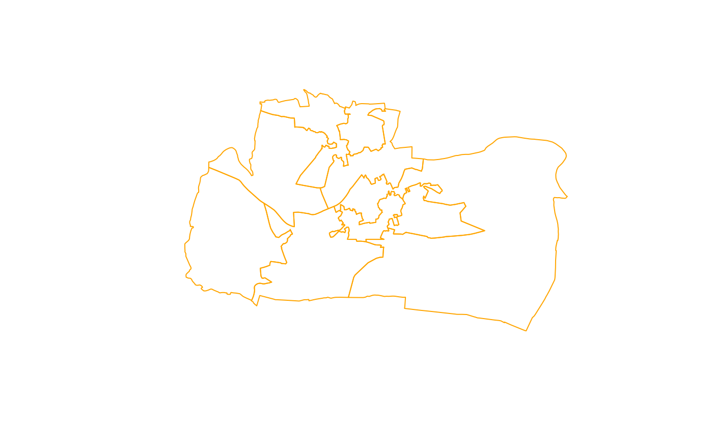

Accepts a character vector of SQL file names and attempts to execute the queries in each one.
Usage
run_files(filenames, ..., include_params = FALSE)
runfiles(filenames, ..., include_params = FALSE)Arguments
- filenames
name, or vector of names, of file(s) to be executed
- ...
Arguments to be passed to
run_queries(),prepare_sql(), orread_sql()- include_params
TRUEorFALSE. Should the parameters be included in the output?
Details
If no default connection is supplied via default.conn and no
connections have been configured using connect(), an attempt will be made
to configure connections via connect() using the configuration search
path. If no database connections are available after this attempt, an error
will be raised. See vignette("connections") for details about the
configuration search path.
run_files() calls read_sql() on each file, and prepare_sql() on the
queries read from those files. Prepared queries are executed with run_queries(). The
behaviour of those functions can be controlled by passing the relevant
parameters to run_files() as the ... argument.
run_files() also enables control of the arguments accepted by run_queries() on
a per-query basis, by interpreting comments in SQL files as described
for read_sql(). Interpreted comments precede the sql query to which they
refer. Each interpretable comment must be on a line by itself and take the
form:
-- keyword = valueKeywords and possible values for interpretable comments are:
- qname
A name for this query
- quotesql
"yes" or "no" - should interpolated characters be quoted?
- interpolate
"yes" or "no" - should sql be interpolated?
- execmethod
One of "get", "execute", "sendq", "sends" or "spatial" - which method should be used to execute the query? "get" means
DBI::dbGetQuery(); "execute" meansDBI::dbExecute(); "sendq" meansDBI::dbSendQuery; "sends" meansDBI::dbSendStatement(); "spatial" meanssf::st_read().- geometry
The name of a spatial column. Ignored if
execmethodis not 'spatial'- conn_name
The name of a connection to execute this query against
All interpreted comments except qname are cascaded within their file,
meaning that if you want to use the same values throughout, you need only set
them for the first query. See read_sql() for details.
See also
Other SQL runners:
run_queries()
Examples
library(sqlhelper)
config_filename <- system.file("examples/sqlhelper_db_conf.yml",
package="sqlhelper")
readLines( config_filename ) |> writeLines()
#> #### sqlhelper_db_conf.yml ####
#>
#> simple_sqlite:
#> driver_type: sqlite
#> description: "A simple connection to an in-memory database"
#> connection:
#> Server: ":memory:"
#>
#> pool_sqlite:
#> driver_type: sqlite
#> pool: yes
#> description: "A pooled connection to an in-memory database"
#> connection:
#> Server: ":memory:"
connect(
config_filename,
exclusive=TRUE)
DBI::dbWriteTable( default_conn(), "iris", iris)
sf::st_write(spData::congruent, default_conn(), "congruent")
#> Note: method with signature ‘DBIObject#sf’ chosen for function ‘dbDataType’,
#> target signature ‘SQLiteConnection#sf’.
#> "SQLiteConnection#ANY" would also be valid
sf::st_write(spData::incongruent, live_connection("pool_sqlite"), "incongruent")
run_files_ex1 <- system.file("examples/run_files_ex1.sql", package="sqlhelper")
readLines( run_files_ex1 ) |> writeLines()
#> -- qname = how_many_irises
#> SELECT count(*) as N FROM IRIS;
#>
#> -- qname = n_longest_setosa_petal_lengths
#> SELECT *
#> FROM (SELECT *
#> FROM IRIS
#> WHERE Species = 'setosa'
#> ORDER BY [Petal.Length] DESC)
#> LIMIT {n_longest_petals}
run_files_ex2 <- system.file("examples/run_files_ex2.sql", package="sqlhelper")
readLines( run_files_ex2 ) |> writeLines()
#> -- qname = get_congruent
#> -- execmethod = spatial
#> -- geometry = geometry
#> select geometry from congruent;
#>
#> -- qname = get_incongruent
#> -- conn_name = pool_sqlite
#> select geometry from incongruent;
n_longest_petals <- 5
results <- run_files( c( run_files_ex1, run_files_ex2 ) )
names(results)
#> [1] "how_many_irises" "n_longest_setosa_petal_lengths"
#> [3] "get_congruent" "get_incongruent"
results$how_many_irises
#> N
#> 1 150
results$n_longest_setosa_petal_lengths
#> Sepal.Length Sepal.Width Petal.Length Petal.Width Species
#> 1 4.8 3.4 1.9 0.2 setosa
#> 2 5.1 3.8 1.9 0.4 setosa
#> 3 5.4 3.9 1.7 0.4 setosa
#> 4 5.7 3.8 1.7 0.3 setosa
#> 5 5.4 3.4 1.7 0.2 setosa
plot(results$get_congruent, border = "orange")
plot(results$get_incongruent, border = "blue", add=TRUE)
